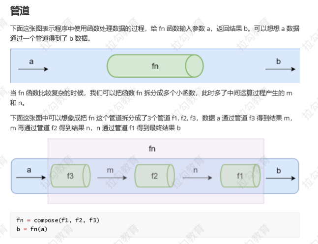

函数式编程
函数式编程（Functional Programming,FP）,FP是编程模范式之一，还有面相过程编程，面相对象编程等。
是对运算过程的抽象，函数式编程中的函数指的不都是程序中的函数（方法），而是数学中的函数即映射关系，例如：y=sin(x)，x和y的关系
相同的输入始终要得到相同的输出(纯函数)
函数式编程用来描述数据（函数）之间的映射。
函数式编程不会保留计算中间的结果，所以变量是不可变的（无状态的）
我们可以把一个函数的执行结果交给另一个函数去处理。
为啥要学习函数式编程
函数式编程式随着React的流行受到越来越多的关注
vue3也开始拥抱函数式编程
函数式编程可以抛弃this
打包过程中可以更好的利用tree shaking 过滤无用代码
方便测试、方便并行处理
有很多库可以帮助我们进行函数式开发：lodash、underscore、ramda
高阶函数
1、函数作为参数
会让我们的函数更加灵活，会屏蔽内部的一些细节，函数名更加语义化。
function filter(arr,fn){
let res = []
for( var i = 0 ; i < arr.length ; i++){
if(fn(arr[i])){
res.push(arr[i])
}
}
return res
}
let list = [1,2,3,4,5,6,7,8,9]
let a = filter(list,function(item){
return item % 2 === 0
})
console.log(a)
2、函数作为返回值
function once(fn){
let done = false;
return function(){
console.log(arguments)
if(!done){
done = true
return fn.apply(this,arguments)
}
}
}
var pay = once(function(money){
console.log(`支付：${money}元。`)
})
console.log(pay)
pay(3)
pay(5)
使用高阶函数的意义
使用高阶函数可以使函数很灵活，抽象可以帮助屏蔽实现的细节，下次调用的时候 只关注实现的目标就行了。
常用的高阶函数
forEach
map
filter
every
some
find/findIndex
reduce
sort
……
const map = function(arr,fn){
let res = []
for( var i = 0 ; i < arr.length ; i++){
res.push(fn(arr[i],i,arr))
}
return res
}
var list = [1,2,3,4,5,6,7]
var a = list.map(function(item , i,arr){
return item * item
})
console.log(a)
闭包
闭包（closure）：函数和其周围的状态（词法环境）的引用捆绑在一起形成闭包。
可以在另一个作用域调用一个函数的内部函数并访问到该函数的作用域中的成员。
闭包的本质：函数在执行的时候会放到一个执行栈上，当函数执行完毕之后会从执行栈上移除，但是堆上的作用域成员因为被外部引用不能释放，因此内部函数依然可以访问外部函数的成员
function makePower(power){
return function(number){
return number ** power
}
}
let power2 = makePower(2);
let power3 = makePower(3);
console.log(power2(2))
console.log(power2(3))
console.log(power3(2))
纯函数
纯函数概念：相同的输入永远会得到相同的输出，而且没有任何可观察的副作用。
纯函数就类似数学中的函数（用来描述输入和输出之间的关系）。
纯函数的好处：
1、可缓存
因为纯函数对相同的输入始终有相同的结果，所以可以把纯函数的结果缓存起来。
function getArea(r){
console.log(r)
return Math.PI * r ** 2
}
function memoize(fn){
let cache = {}
return function(){
let a = JSON.stringify(arguments)
cache[a] = cache[a] || fn.apply(fn,arguments)
return cache[a]
}
}
const r = memoize(getArea)
console.log(r(4))
console.log(r(4))
2、可测试
纯函数让测试更方便
3、并行处理
在多线程环境下并行操作共享的内存数据很可能会出现意外情况
纯函数不需要访问共享的内存数据，所以在并行环境下可以任意运行纯函数 (Web Worker)
副作用：
副作用让一个函数变得不纯，纯函数根据相同的输入返回相同的输出，如果函数依赖于外部的状态就无法保证输出相同，就会带来副作用。
副作用来源：
配置文件
数据库
获取用户的输入
......
所有的外部交互都有可能带来副作用，副作用也使得方法通用性下降，不适合扩展和可重用性，同时副作用会给程序带来安全隐患给程序带来不稳定性，但是副作用不可能完全禁止，尽可能的控制它们在可控范围内发生。
函数柯里化（Currying）
当一个函数有多个参数的时候先传递一部分参数调用它（这部分参数以后永远不变）
然后返回一个新的函数接受剩余的参数，返回结果。
const _ = require('lodash');
const match = function(reg,str){
return str.match(reg)
}
console.log(match(/\s+/g,'ab c')) // [' ']
//----------------------------------------------
const match = function(fn){
return function(str){
return str.match(fn)
}
}
const matchBlank = match(/\s+/g);
const matchNumber = match(/\d+/g);
console.log(matchBlank('abc def')); //[ ' ' ]
console.log(matchNumber('123abc')) //[ '123' ]
//----------------------------------------------
const match = _.curry(function(reg,str){
return str.match(reg)
})
const matchBlank = match(/\s+/g)
const matchNumber = match(/\d+/g)
console.log(matchBlank('abc def')) //[ ' ' ]
console.log(matchNumber('d123ef')) //[ '123' ]
//-----------------------------------------------
const filter = _.curry(function(fn,arr){
return arr.filter(fn)
})
const arrMatchBlank = filter(matchBlank)
const arrMatchNumber = filter(matchNumber)
console.log(arrMatchBlank(['123','abc def'])) //[ 'abc def' ]
console.log(arrMatchNumber(['123','abc def'])) //[ '123' ]
const _ = require('lodash');
const match = function(reg,str){
return str.match(reg)
}
console.log(match(/\s+/g,'ab c'))
//----------------------------------------------
const match = function(fn){
return function(str){
return str.match(fn)
}
}
const matchBlank = match(/\s+/g);
const matchNumber = match(/\d+/g);
console.log(matchBlank('abc def'));
console.log(matchNumber('123abc'))
//----------------------------------------------
const match = _.curry(function(reg,str){
return str.match(reg)
})
const matchBlank = match(/\s+/g)
const matchNumber = match(/\d+/g)
// console.log(matchBlank('abc def'))
// console.log(matchNumber('123def'))
//-----------------------------------------------
const filter = _.curry(function(fn,arr){
return arr.filter(fn)
})
const arrMatchBlank = filter(matchBlank)
const arrMatchNumber = filter(matchNumber)
console.log(arrMatchBlank(['123','abc def']))
console.log(arrMatchNumber(['123','abc def']))
模拟实现 _.curry方法
function getSum(a,b,c){
return a + b + c
}
function curry(fn){
return function curried(...args){
console.log(args)
if(args.length < fn.length){
return function(){
console.log(arguments)
return curried(...args.concat(Array.from(arguments)))
}
}
return fn(...args)
}
}
console.log(curry(getSum)(1,2)(3,4))
柯里化总结
柯里化可以让我们给一个函数传递较少的参数得到一个已经记住了某些固定参数的新函数。
对函数参数进行缓存。
让函数变得更灵活，让函数的颗粒更小。
可以把多元函数转换成一元函数，可以组合使用函数产生强大的功能。
函数的组合
纯函数和柯里化很容易写出洋葱代码 h(g(f(x))) 获取数组的最后一个元素再转换成大写字母，
函数组合可以让我们把细粒度的函数重新组合生成一个新的函数。

函数组合 (compose)：如果一个函数要经过多个函数处理才能得到最终值，这个时候可以把中间过程的函数合并成一个函数
函数就像是数据的管道，函数组合就是把这些管道连接起来，让数据穿过多个管道形成最终结果
函数组合默认是从右到左执行
模拟实现 lodash 的 flowRight 方法
const arr = ['one','two','three','four','five']
const reverse = val => val.reverse()
const first = val => val[0]
const upper = val => val.toUpperCase()
function compose(...args){
return function(value){
return args.reverse().reduce(function(acc,fn){
return fn(acc)
},value)
}
}
// 改用箭头函数书写
const compose = (...args) => value => args.reverse().reduce((acc,fn) => fn(acc),value)
// ---------------------------------------------
const r = compose(upper,first,reverse)
// 方法的组合需要满足结合律
const r = compose(upper,compose(first,compose(reverse)))
console.log(r(arr))
组合函数的调试
const _ = require('lodash');
const split = _.curry((str,sep) => _.split(sep,str))
const join = _.curry((sep,array) => _.join(array,sep))
const map = _.curry((fn,array) => _.map(array,fn))
const log = _.curry((str,v) => {
console.log(str, v);
return v;
})
const transStr = _.flowRight(join('-') , log('map之后'), map(_.toLower) , log('split之后') , split(' '))
const r = transStr('ABCDE FGH')
console.log(r)
lodash中的fp模块
lodash 的 fp 模块提供了实用的对函数式编程友好的方法
提供了不可变 auto-curried iteratee-first data-last 的方法
// lodash 模块
const _ = require('lodash')
_.map(['a', 'b', 'c'], _.toUpper)
// => ['A', 'B', 'C']
_.map(['a', 'b', 'c'])
// => ['a', 'b', 'c']
_.split('Hello World', ' ')
// lodash/fp 模块
const fp = require('lodash/fp')
fp.map(fp.toUpper, ['a', 'b', 'c'])
fp.map(fp.toUpper)(['a', 'b', 'c'])
fp.split(' ', 'Hello World')
fp.split(' ')('Hello World')
const fp = require('lodash/fp')
const f = fp.flowRight(fp.join('-'), fp.map(_.toLower), fp.split(' '))
console.log(f('NEVER SAY DIE'))
Point Free
我们可以把数据处理的过程定义成与数据无关的合成运算，不需要用到代表数据的那个参数，只要把简单的运算步骤合成到一起，在使用这种模式之前我们需要定义一些辅助的基本运算函数。
---不需要指明处理的数据
---只需要合成运算过程
---需要定义一些辅助的基本运算函数

Functor (函子)
为什么要学函子
到目前为止已经已经学习了函数式编程的一些基础，但是我们还没有演示在函数式编程中如何把副作用 控制在可控的范围内、异常处理、异步操作等。
什么是 Functor
容器：包含值和值的变形关系(这个变形关系就是函数)
函子：是一个特殊的容器，通过一个普通的对象来实现，该对象具有 map 方法，map 方法可以运 行一个函数对值进行处理(变形关系)
Functor 函子
总结
函数式编程的运算不直接操作值，而是由函子完成
函子就是一个实现了 map 契约的对象
我们可以把函子想象成一个盒子，这个盒子里封装了一个值
想要处理盒子中的值，我们需要给盒子的 map 方法传递一个处理值的函数（纯函数），由这个函数来对值进行处理
最终 map 方法返回一个包含新值的盒子（函子）